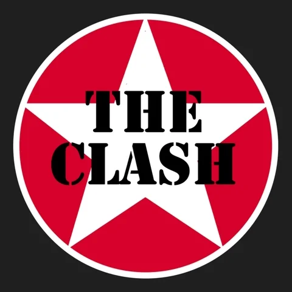
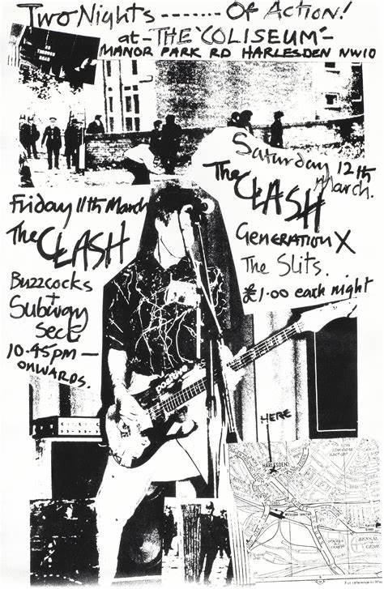
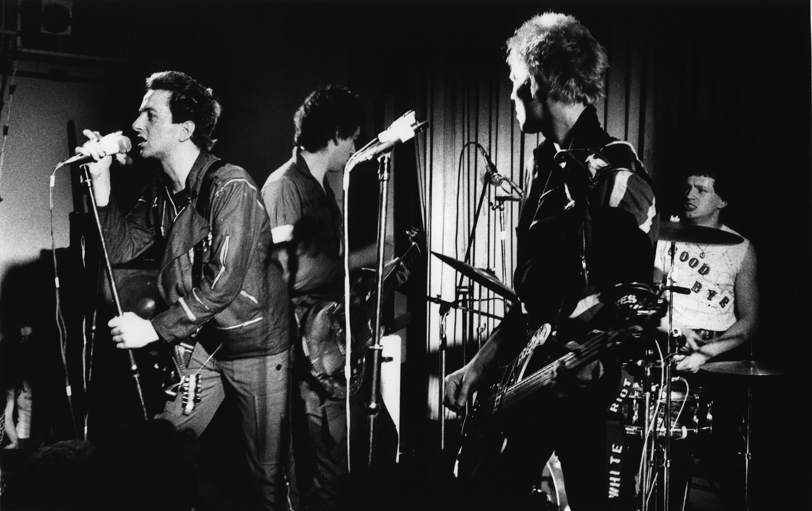
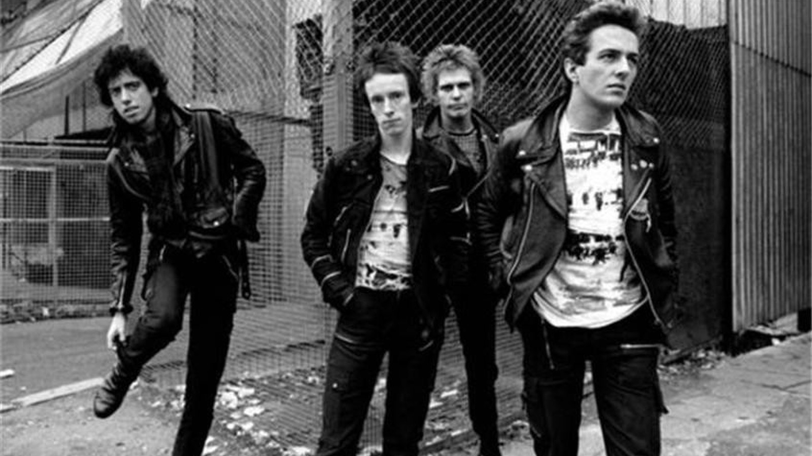
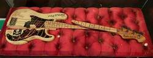
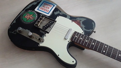
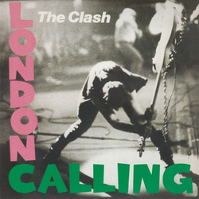
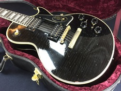
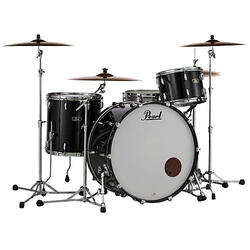

THE CLASH
Song:Career Opportunities - The Clash 
The Clash were an English rock band that formed in London in 1976 and were key players in the original wave of British punk rock. Billed as "The Only Band That Matters", they used elements of reggae, dub, funk, ska, and rockabilly, and they contributed to the post-punk and new wave movements that followed punk. For most of their recording career, the Clash consisted of lead vocalist and rhythm guitarist Joe Strummer, lead guitarist and vocalist Mick Jones, bassist Paul Simonon, and drummer Nicky "Topper" Headon.

The Clash achieved critical and commercial success in the United Kingdom with the release of their debut album The Clash (1977) and their second album Give 'Em Enough Rope (1978). Their experimental third album London Calling, which was released in the UK in December 1979, earned them popularity in the United States, where it was released the following month. A decade later, Rolling Stone named London Calling the best album of the 1980s. Following continued musical experimentation on their fourth album Sandinista! (1980), the band achieved further commercial success with the release of Combat Rock (1982), which includes the US top-10 hit "Rock the Casbah", helping the album to achieve a 2× platinum certification there.

In 1982, Headon left the band due to internal friction surrounding his increasing heroin addiction, and Jones departed the following year. With a new lineup, the band released their final album Cut the Crap in 1985 before disbanding a few weeks later.[1]

In January 2003, shortly after the death of Joe Strummer, the band, including original drummer Terry Chimes, were inducted into the Rock and Roll Hall of Fame. In 2004, Rolling Stone ranked the Clash number 28 on its list of the "100 Greatest Artists of All Time".

Instruments
    Albums/Compilations
- The Clash (UK Version) (1977)
- Capital Radio EP (1977)
- Give 'Em Enough Rope (1978)
- The Clash (US Version) (1979)
- The Cost of Living EP (1979)
- London Calling (1979)
- Sandinista! (1980)
- Black Market Clash (1980)
- Combat Rock (1982)
- Cut the Crap (1985)
- The Story of The Clash Vol. 1 (1988)
- The Singles (1991)
- Clash On Broadway 1991
- Super Black Market Clash (1994)
- Live: From Here to Eternity (1999)
- The Essential Clash (2003)
- The Singles Boxset (2006)
| Number 1 You have the right not to be killed | Unless it was done by a Policeman or aristocrat | Number 2 You have the right to food money | Providing of course you Don't mind a little Investigation, humiliation And if you cross your fingers Rehabilitation | Number 3 You have the right to free Speech | as long as you're not Dumb enough to actually try it. |
|---|